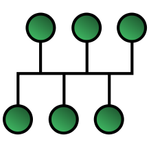

1.버스 토폴로지
버스 위상구조, 버스 네트워크(Bus network)는 버스라 불리는 공유 통신 경로를 통해 연결된 클라이언트의 집합을 가리키는 네트워크 구조이다. 한 스테이션이 신호를 전송 할 때 그 신호들은 단일 전송 구간을 따라 양방향으로 이동한다. 모든 신호는 전체 네트워크에서 양방향으로 전파되는데, 네트워크상의 모든 장치는 같은 신호를 받게 되며, 클라이언트에 설치된 소프트웨어는 각 클라이언트가 본인에게 지정된 메시지만을 수신할 수 있도록 한다. 버스형 네트워크는 가장 보편적인 이더넷 위상구조다.
